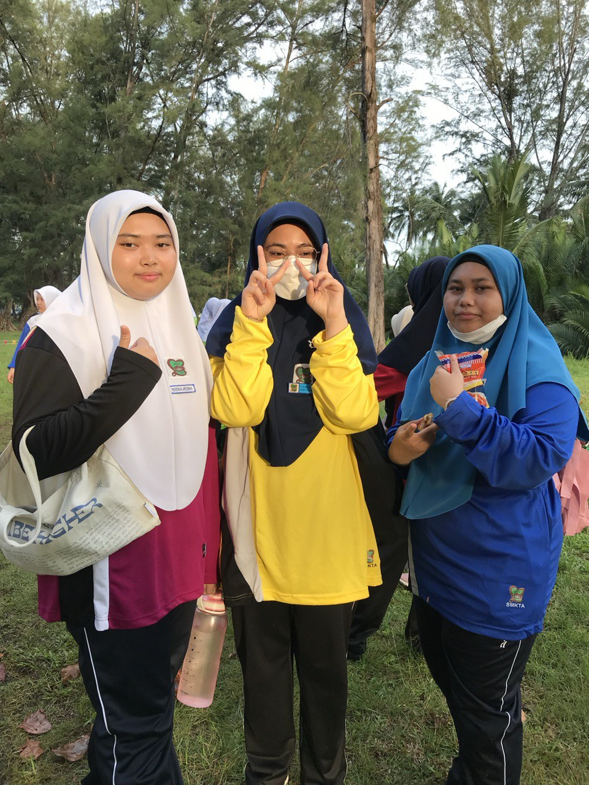
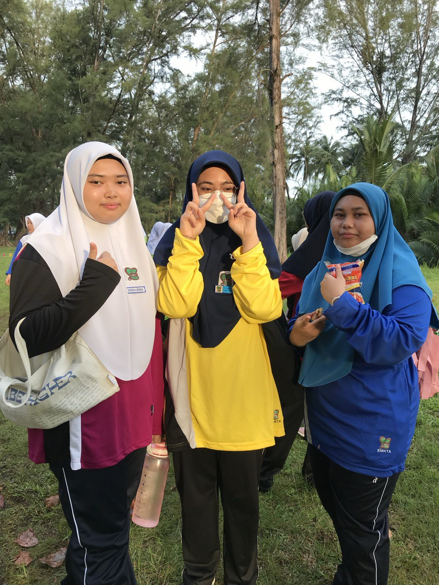
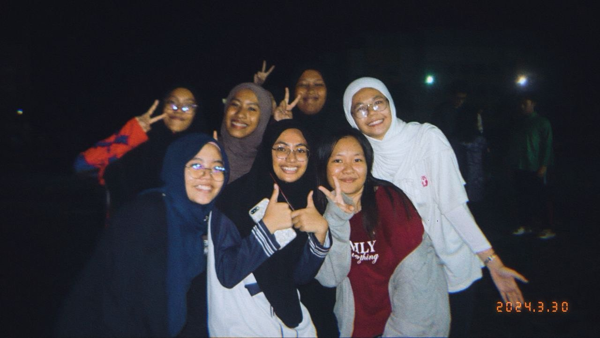
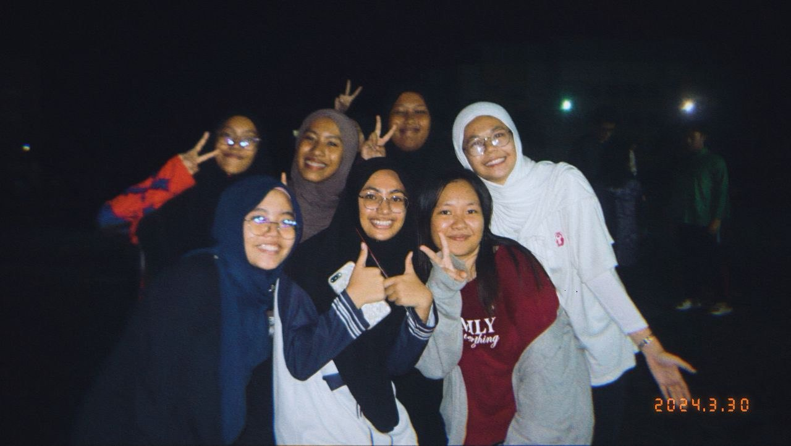
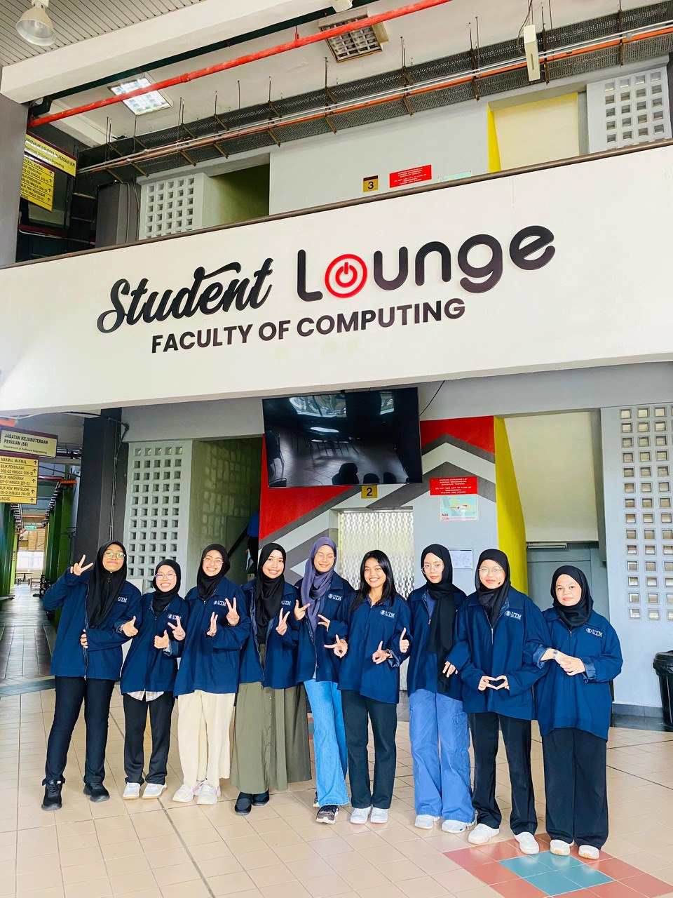
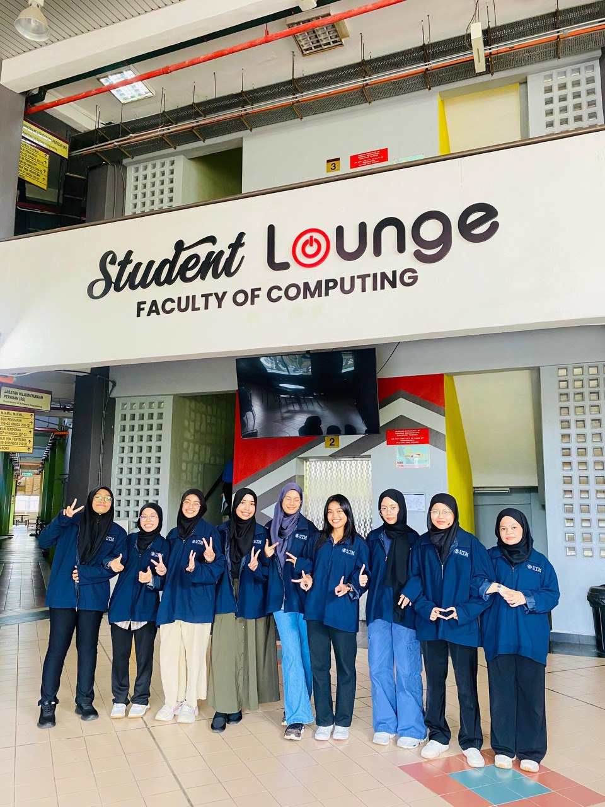

+ one

 >
>
About myself
A 19-year-old girl who always dreamt of being an adult, the second child in family of three siblings. Coming from humble town that has always been home-Kuantan.I'm very clingy to my CLOSE friends,who bring out my talkative side.In my free time, watching Korean reality shows, K-dramas and Youtube is my comfort zone to escape from a busy life.
Education 1

 


My education journey started from primary school at Sk Assunta Convent and continuing to highschool which just one-minute drive from my primary school-Smk Tengku Afzan . Being in an all-girls school helps me in positively shape personal and academic growth as my school focus on female leadership which helps build our confidence and encourage girls to take on leadership roles.Deeper and long-lasting friendships also be formed in a supportive environment eventhough we all in different classes.


 

After finished my Sijil Pelajaran Malaysia(SPM), I got accepted into Selangor Matriculation College(KMS) and pursued Physical Science course. There were bittersweet and happy moments where I faced during my 10 months there. Alhamdulillah, Allah sent me good friends who helped me throughout my matriculation days. Gossiping in cafes, late-night studies, laughter and inside jokes becomes unforgettable memories.
Education 3
 

Now, I'm pursuing my studies in Bachelor of Computer Science(Data Engineering) with Honours at University Teknologi Malaysia(UTM). I'm looking forward to my degree journey, where I'll gain knowledge and trying build connection with others.